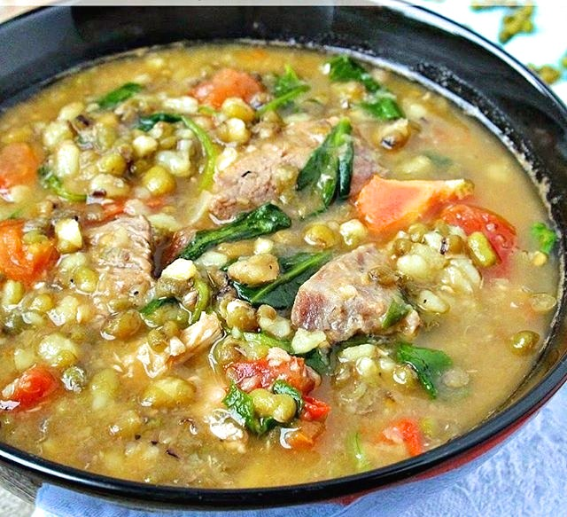

How To Cook Munggo
Ingredients
- Monggo Beans
- 1L Water
- Vegetable Cooking Oil
- Garlic
- Onion
- Tomatoes
- Pork Strips
- 2pc Pork cube
- Ampalaya
- Malunggay Leaves
Cook
- Cooking is all about love and patience. There are certain dishes that need more attention than others, no matter how simple they are. But in the end, you can be sure that the reward is worth it. Monggo is one of those dishes that needs certain preparation before it is fully enjoyed by the family.
- Since monggo is a seed, you need to wash the seeds first in water to get rid of the unwanted dirt they might have collected. And since monggo is a kind of dried bean, you need to soak monggo in water to soften them because seeds absorb water. You can soak monggo for a minimum of 1 hour but the longer you soak them, the less time you need to cook them. Make sure to remove the floating particles on top. You don’t want any dirt on your dish.
- Once your beans are soft enough you can start sautéing the garlic, onions and tomatoes in a saucepan for about 2 minutes or more. Here’s a technique that most people do not know. Since your “aromatics” which are also known as your sautéing vegetables contain sugar, the longer you cook them, the more you develop flavour from caramelization.
- The next step is the easiest because you just need to throw in the pork strips and saute until nicely browned. Drain the beans from the soaking water the add into your pot. Pour in 4 cups water, and the Knorr Pork Cube. Let this simmer until the beans can easily be mashed. Just a tip, if you want a thinner soup consistency, you may add more water. On the other hand, if you want a thicker soup consistency, simply lessen the amount of water or you may continue cooking until the sauce thickens.
- We’re almost there! You just need to add in the ampalaya and cook this for 2 minutes more before adding in the malunggay.
- What a reward this dish brings to the table for Ginisang Monggo is a healthy and delicious meal waiting to be enjoyed by the whole family. TIP: Monggo is best topped with chicharon and paired with any fried dish like fish or liempo. Tip: If you're not a fan of ampalaya, use ampalaya leaves instead or just add more malunggay leaves.

Find Other Recipes